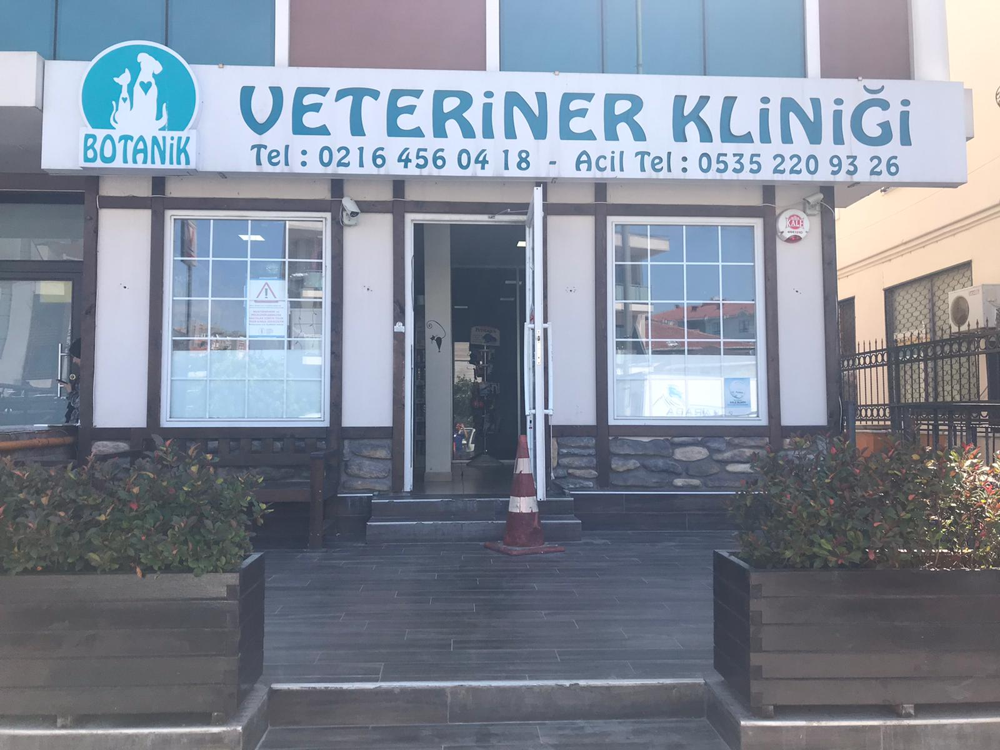
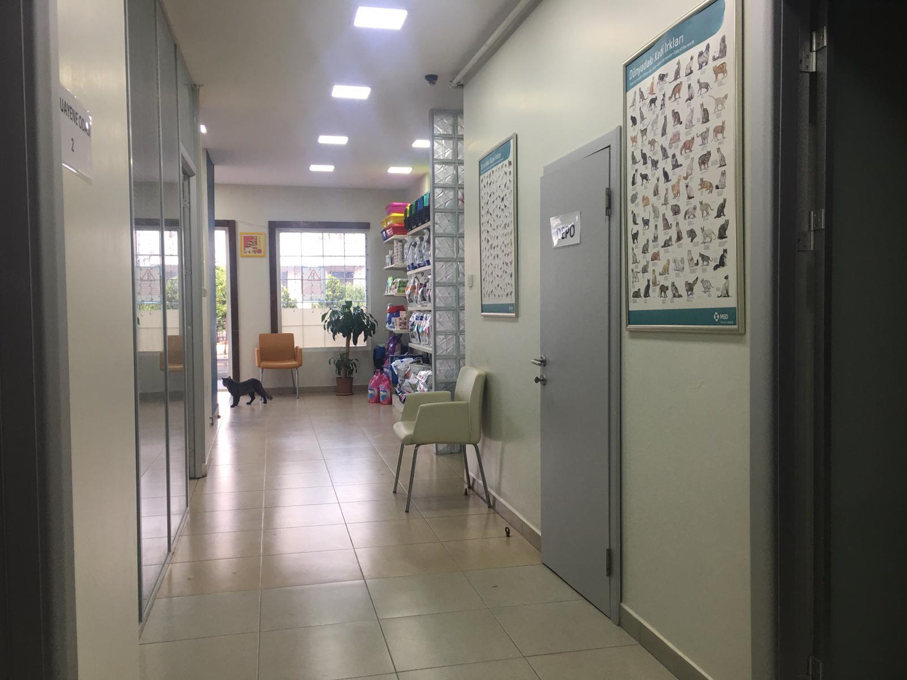
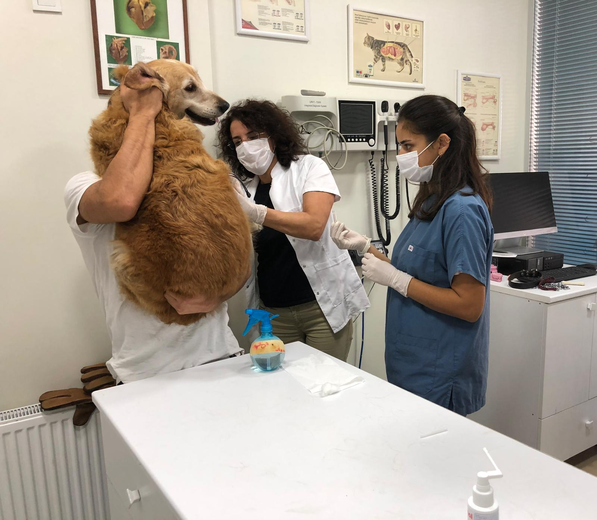
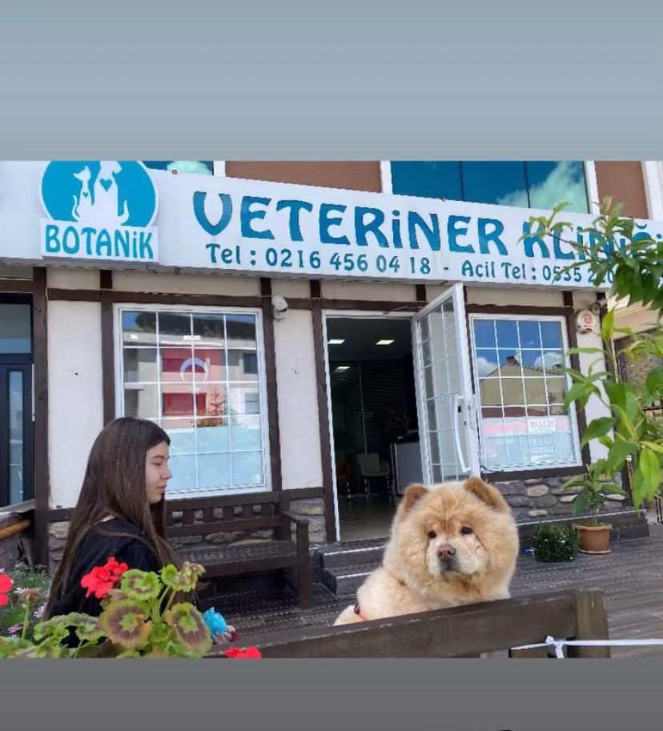

Ataşehir Botanik Veteriner Kliniği, Girne Caddesi'nde mahallenin patili dostlarına yıllardır hizmet veriyor. Her muayenede hayvanınızla ilgilenir, yapılan işlemi size sade bir dille anlatırız.
Türünü seçin, doğum tarihini girin: karma aşı, kuduz ve parazit uygulamalarının tarihleri çıksın; hepsi tek dokunuşla takviminize hatırlatma olarak düşsün.
Genel takvimdir; kesin aşı programını muayenede hekimimiz belirler.
Belirtileri seçin; beklemeli mi, bugün mü gelmeli, hemen mi aramalı, sade bir dille söyleyelim. Teşhis koymaz, sizi doğru zamanda kliniğe yönlendirir.
Boş saatleri görün, dostunuzun adıyla randevu talebinizi gönderin.
Gün ve saat seçin; talebiniz WhatsApp'tan kliniğe gitsin.
Dostunuzun genel durumu klinik muayeneyle değerlendirilir, bulgular size ayrıntılı biçimde anlatılır.
Aşı takvimi ve düzenli kontroller konusunda sizi bilgilendiriyor, koruyucu bakımı birlikte planlıyoruz.
Rahatsızlığı olan hayvanlar için muayene sonrası süreç takip edilir, sahibi her adımda bilgilendirilir.
Planlı ve gerekli görülen cerrahi işlemler hakkında önceden konuşur, süreci birlikte netleştiririz.
Muayeneyi desteklemek için gerekli görülen tetkikler ve testler konusunda size yol gösteririz.
Yavru dostlarımız ve sokaktan getirilen hayvanlar için ilk kontrol ve bakım desteği sunuyoruz.




Müşterilerimiz Filiz Hanım'ın bilgisini ve tecrübesini yıllardır takdirle anıyor. Birçok aile ilk dostunu da sonraki dostunu da bize emanet etti.
Hayvanlara duyulan sevgi ve şefkat muayene odasında her an hissediliyor. Hasta bir dostunuzu getirdiğinizde yalnız bırakılmazsınız.
Muayenede neyin neden yapıldığını tek tek açıklıyoruz. Süreci anlayarak karar vermeniz bizim için önemli.
Yavru bir sokak kedisi ya da köpeği için kapımız açık. Sahipli ya da sahipsiz, her canlıya özenle yaklaşmaya çalışıyoruz.
📍 Atatürk, Girne Cd No:49/1, 34758 Ataşehir/İstanbul
🕑 Pzt–Cmt 09:30–19:00 · Paz 09:30–16:00